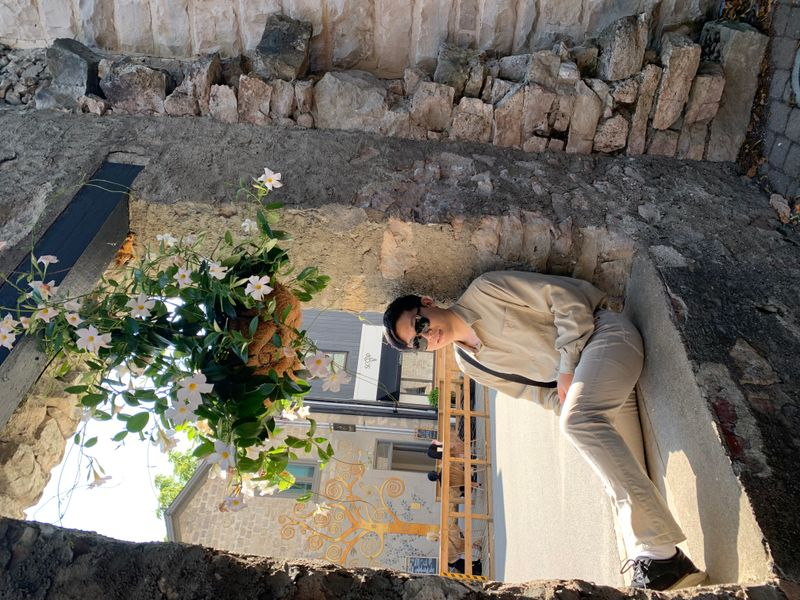

Hover a cluster to light it up · click a node to enter
01 — Identity
About Me
I’m Sebin (Sven) Im, an AI researcher in Toronto working at the intersection of machine intelligence, statistics, and computational cognitive science.

A mind for systems
I hold an HBSc in Computer Science and Statistics from the University of Toronto. My work moves between theoretical questions — how agents learn, represent, and decide — and systems that have to run in the real world.
I founded Mentis Journal, previously served as president of the Cognitive Science and Artificial Intelligence Students’ Association (CASA), and now research AI at DRDC, Department of National Defence.
TorontoDRDC / DNDU of TMentis Journal
02 — Cortex
Artificial Intelligence
The brain on the landing page is a metaphor I actually work with: graphs, inference, local models, and the messy loop between perception and action.
Current focus areas include Bayesian machine learning, reinforcement learning, computer vision with YOLOv8, and local RAG + LLM stacks that keep data on-device.
I’m interested in theoretical AI and computational cognitive science: not only whether a model scores well, but what kind of mind-like structure it implies — representation, uncertainty, and control.
At DRDC I apply these ideas in defence research contexts, where reliability and interpretability matter as much as raw capability.